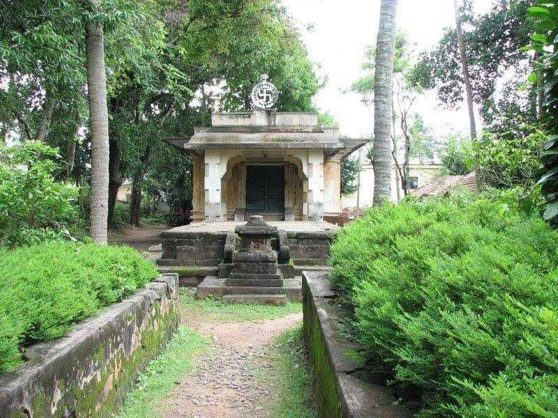
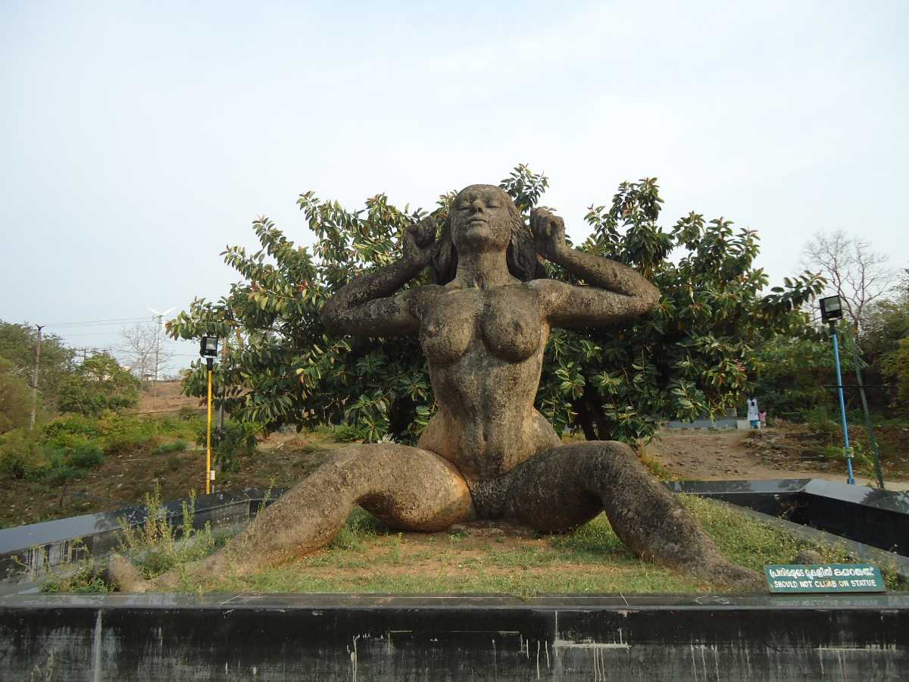

MAIN ATTRACTIONS
Parambikulam tiger reserve
Blooming with in rare varieties of medicinal plants, orchids and fauna, the Parambikkulam Wildlife Sanctuary is hailed to be one of the best wildlife sanctuaries in South India.


Silent Valley National Park
The Silent Valley National Park, with its lush green forests and beautiful views of the rich flora, is a popular destination for nature and wildlife lovers in Kerala. With its long, detailed history and the unique status of a Rain Forest, this national park is truly a sight to visit. The well-planned Safari and the beautiful stop-overs around the park only make a trip to this part of Kerala more worthwhile.
Jain temple
More than 500 years old, the Jain Temple at Jainimedu is well known for its granite walls which are 32 feet long and 20 feet wide. Located on the south banks of River Kalpathy, this ancient temple is enshrined with the images of Jain Tirthankaras and Yakshinis.


Yakshi statue
Yakshi Statue is a famous attraction in the Malampuzha Garden and a beautiful touch to the serene beauty of the garden. It is a stunning stone-carved piece of art created by a famous sculptor named Kanai Kanhiraman.
Nelliyampathy
If you see the mist floating in the air and a pleasant aroma of coffee teasing your nostrils, a chain of majestic mountains peaking from all around and a wonderful weather relaxing your nerves, then you are not dreaming, you are in a small beautiful hill station of Kerala known as Nelliyampathy.